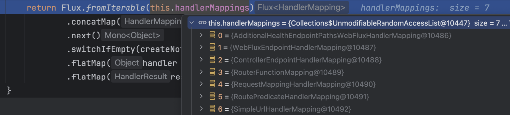
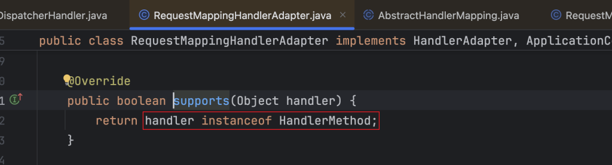
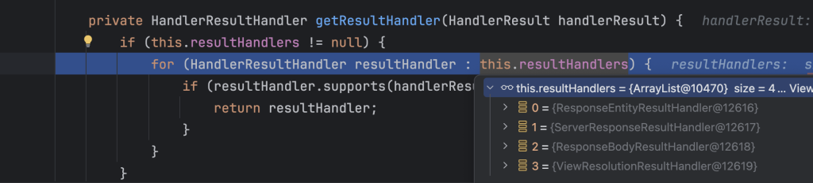

DispatcherHandler 分析与 Gateway 实现
经过前面对于Spring Boot的Web请求处理流程分析，我们知道当请求进入服务器之后会被netty的handler处理然后转入spring boot的handler处理逻辑。在reactive类型的web容器场景下，进过spring boot的handler经过了层层的封装，但最核心的则是名为webHandler的实例：DispatcherHandler。下面我们来分析一下该类的结构以及可以进行的拓展。
DispatcherHandler处理请求
我们还是先来看DispatcherHandler是如何一步一步构造出来的，流程图如下：

DispatcherHandler是在图中的步骤3中从容器中获取名为“webHandler”的bean得到的，最终返回的则是层层的封装的到的HttpWebHandlerAdapter。
DispatcherHandler实现了WebHandler接口，重写了handle(ServerWebExchange exchange)方法。当处理请求的时候，执行流程则与图中的构造过程相反，依次执行handler方法，最终执行到DispatcherHandler.handler方法。
DispatcherHandler有三个自动注入的属性：
List |
根据请求信息，判断出使用哪个handler来处理 |
|---|---|
List |
使用handlerAdapter来执行handler，返回执行结果 |
List |
对执行结果进行处理，例如json序列化操作 |
来看一下具体的处理流程：

在处理请求的时候，会遍历所有的HandlerMapping，根据当前请求的信息通过getHandler方法获得到与当前请求匹配的handler，然后交给对应的HandlerAdapter来执行handler。
HandlerAdapter的存在是为了让handler的执行逻辑和DispatcherHandler解耦，因为执行handler的时候可能不是简单的去调用handler的handle方法，还需要额外的逻辑，因此将handler的具体执行交给HandlerAdapter。
spring中也内置了HandlerAdapter，通过supports方法判断来处理不同功能的HandlerMapping。

根据上面的理解，我们可以知道在处理请求的过程中HandlerMapping、HandlerAdapter和HandlerResultHandler是很重要的组件。我们通过对于一个请求的跟踪来看一下这三着是如何协作的。
从ping请求看方法调用
我们通过postman发送请求：GET localhost/ping，然后在DispatcherHandler类中打断点来看一下执行流程。
HandlerMapping匹配获得Handler

当程序执行到断点之后，查看handlerMappings的集合里面有其他元素，我们在详细看一下这七个实例的详细的信息：

在上图中可以看到集合中每个HandlerMapping的顺序和在容器中的bean名称，顺序值越小优先级越高，在遍历的时候也是按照优先级由小到大的顺序依次遍历。
这里通过调试方式找到当遍历到RequestMappingHandlerMapping的时候会获取到我的controller方法

HandlerAdapter处理执行请求
通过遍历handlerMapping找到了与当前请求匹配的handler，接下来会将我们获取到的handler交给handlerAdapter来处理，我们看到这里有四个HandlerAdapter的实现：

我这里的handler是HandlerMethod对象，我们查看HandlerAdapter的supports方法看是否支持：

可以看到匹配到的是RequestMappingHandlerAdapter。接下来就是执行它的handle方法进行处理并返回执行结果。
HandlerResultHandler处理请求结果
当我们通过HandlerAdapter执行完controller的逻辑之后，我们会返回一个结果，接下来会把结果交给HandlerResultHandler来处理。我们来看系统预置的实现：

通过这四个实现类的名称，大致也能明白了每个实现处理哪种类型的返回。我们就来看熟悉的ResponseBodyResultHandler吧，我们经常使用@RestController修饰类或者@ResponseBody来修饰类或者方法，这样我们就会接收到json格式的响应。来看一下supports方法：

ResponseBodyResultHandler也确实是这么进行判断的，满足supports方法的条件，那么就会使用ResponseBodyResultHandler来处理响应结果。
Gateway中拓展实现
我的项目因为引入了spring-cloud-starter-gateway，我们仔细观察一下上面调试的时候的HandlerMapping的集合，可以看到有一个名为RoutePredicateHandlerMapping的实现类，这个实现类就是Gateway中的类，他对应的handler是FilteringWebHandler，也就是说如果当前请求匹配到这个HandlerMapping的时候，返回的handler就是FilteringWebHandler。
那么使用哪个HandlerAdapter来执行呢，还是在上面我们调试的时候看到的那四个HandlerAdapter中，只需要查看每个的supports方法或者进行断点调试即可。
最终我们定位到是优先级最低的那个，即SimpleHandlerAdapter。看一下这个类的supports方法和handler方法的逻辑：
public class SimpleHandlerAdapter implements HandlerAdapter {
@Override
public boolean supports(Object handler) {
return WebHandler.class.isAssignableFrom(handler.getClass());
}
@Override
public Mono<HandlerResult> handle(ServerWebExchange exchange, Object handler) {
WebHandler webHandler = (WebHandler) handler;
Mono<Void> mono = webHandler.handle(exchange);
return mono.then(Mono.empty());
}
}
上面是这个类的全部内容，看上去就很简单了，能够匹配到所有WebHandler的子类并且直接执行webHandler.handle方法，并没有多余的逻辑。
Gateway的更详细的实现逻辑就不再这里赘述了。可以参考：gateway的工作原理与实现。
总结
DispatcherHandler是Spring WebFlux用来处理请求的核心类，封装了HandlerMapping、HandlerAdapter和HandelResultHandler三个组件。HandlerMapping负责找出与请求匹配的handler，可能有1-n个；HandlerAdapter只会取出第一个来进行处理，然后将执行的结果提供给HandelResultHandler来进行处理。

在上面的执行流程中，这三个组件都是通过自动注入的方式进行的实例化，我们都可以进行拓展。在Gateway中就是拓展的HandlerMapping来进行的实现。